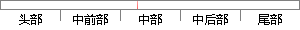

主页面中还有许多的二级界面，采用的方法大同小异，这里就不再一一介绍。
片段位置图

相似结果|
相似片段 1：还有许多，这里就不再一一介绍了。通过以上手段就可判断TB的内容是否发生了变化。OProxy在向教师浏览器传送页面信息时，为了保证浏览器的正确接收，必须有适当的数据缓冲区，以实现Proxy程序和浏览器
相似片段 2：或者参与执行的测试，用来检查产品是否符合用户需求。测试还有许多其它的分类方法，例如按测试内容可以分为：功能测试、性能测试、负载测试、安全性测试、恢复测试、兼容性测试等。这里就不再一一介绍。5.2系统
|
※ 片段修改建议 ※
近似词参考：- 还有：另有
- 许多：很多
- 采用：采取 接纳 采纳
- 方法：方式 要领 法子
- 不再：再也不
- 一一：逐一
- 介绍：先容
系统自动生成语句：主页面中另有很多的二级界面，采取的方式大同小异，这里就再也不逐一先容。
注：本片段修改建议为系统自动生成，仅供参考。